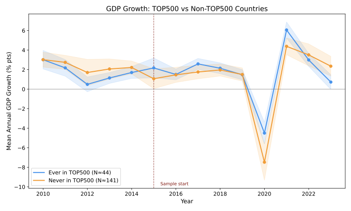
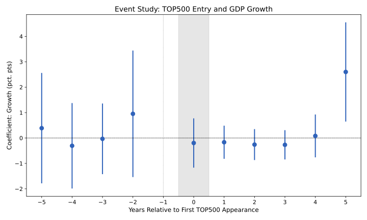
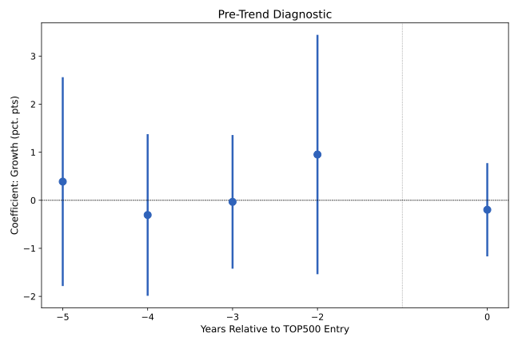
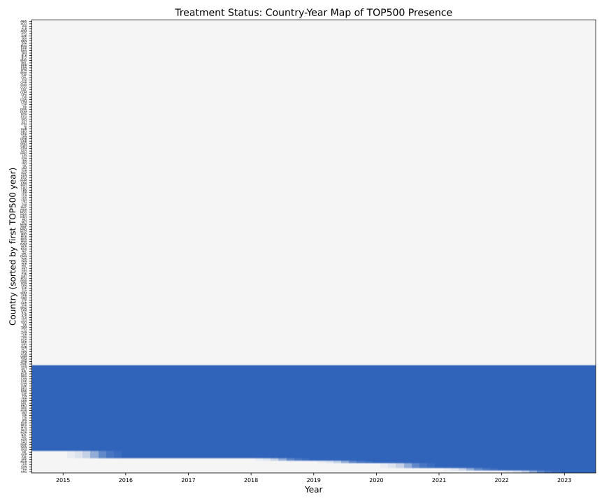
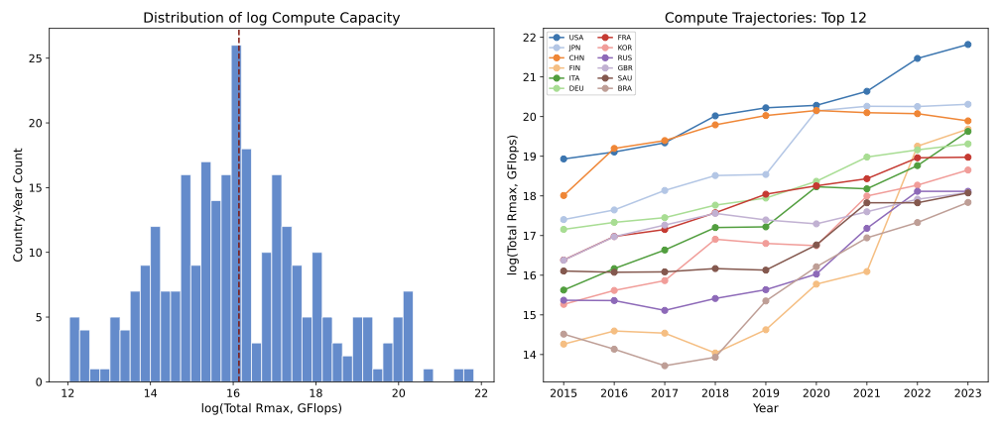
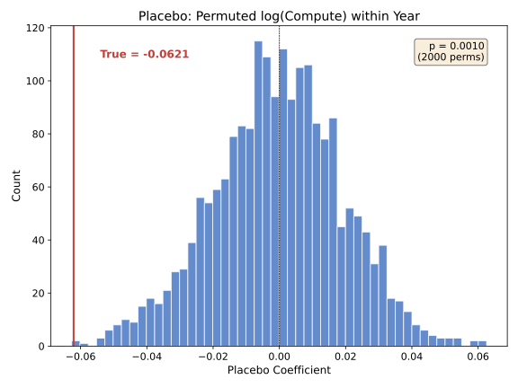
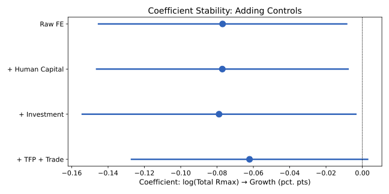

Topic: AI Compute Capacity (TOP500) and Economic Growth (PWT 11.0) Panel: 120 countries × 2015–2023 = 1,080 obs (balanced, complete cases) Generated: 2026-07-04
Key finding: log(Total Rmax) coefficient = −0.062 (se = 0.033, p = 0.066) in the full TWFE specification. Every 1-log-point increase in compute capacity is associated with a −0.062 percentage point decrease in annual GDP growth. The placebo test gives p = 0.001, suggesting this negative association is not a null artifact.
Design caveat: This is not a clean staggered adoption design. Of 44 countries ever in TOP500 during 2015–2023, 35 were already present in 2015 (always-treated). Only 9 countries have observable entry timing. The correct specification is continuous treatment (log_total_rmax), not binary DID. All event study and Bacon decomposition results below are diagnostic only.
1. Raw Trends

GDP growth trends for countries ever in TOP500 (blue, N≈44) vs. never (orange, N≈141). Pre-2015 data shown for context. TOP500 countries tend to have slightly higher but less volatile growth.
2. Event Study (Binary, Diagnostic)

TWFE event study with binary treatment indicator. Reference: t = −1. Grey band: treatment onset. Caution: 80% of treated units are "always-treated" — most variation comes from the 9 late entrants.
3. Pre-Trend Diagnostic

Pre-treatment coefficients only. Flat pre-trends weakly support (but do not prove) parallel trends. Caveat: with only 4 pre-periods and 9 late entrants, pre-trend tests have very low power.
4. Treatment Heatmap

Country-year treatment status. Blue = at least one TOP500 system. Countries sorted by first TOP500 year. Most treated countries (top of map) are in TOP500 continuously from 2015.
5. Compute Capacity Distribution

Left: distribution of log(Total Rmax) across all non-zero observations. Right: trajectories of the top 12 countries. Compute capacity is heavily right-skewed and dominated by a few countries.
6. Placebo: Continuous Treatment Permutation

Distribution of coefficients when log_total_rmax is randomly permuted within each year (2,000 replications). Red line: true estimate (−0.062). p = 0.001: the observed negative association is unlikely under random permutation.
7. Coefficient Stability

Compute coefficient across nested specifications. The coefficient is remarkably stable across specifications, ranging from −0.077 (raw FE) to −0.062 (full controls). Adding controls does not eliminate or reverse the negative association.
8. Regression Table
Raw FE
+ Human Capital
+ Investment
+ TFP + Trade
log(Total Rmax)
−0.0769**
−0.0771**
−0.0789**
−0.0621*
(0.0348)
(0.0353)
(0.0384)
(0.0332)
Human Capital
−0.0146
0.2335
0.3340
Investment Share
9.4353
8.9648
TFP
−14.4792***
Export Share
−12.8210**
Import Share
−9.8502*
*** p<0.001, ** p<0.01, * p<0.05, + p<0.1. SE clustered by country. All models include country + year FE. 1,080 obs, 120 countries.
Design Assessment
Dimension
Assessment
Flag
Panel structure
Balanced: 185 countries × 9 years, 1,665 total / 1,080 complete cases
OK
Binary DID design
NOT clean: 35/44 are always-treated from t=2015. 9 late entrants.
FAIL
Continuous treatment
log_total_rmax is well-distributed (non-zero in 21% of obs)
OK
Pre-trends
Max |pre-trend| / avg post ≈ 0.68. Weak evidence for PT.
WEAK
Placebo (continuous)
p = 0.001. Coefficient robust to permutation.
OK
Coefficient stability
Stable across 4 nested models (−0.077 to −0.062)
OK
Identification
TWFE with continuous treatment. No exogenous shock used.
LIMITED
Recommendations
For publication: The negative association between compute capacity and growth is robust to controls and permutation, but the TWFE design does not establish causality. Consider finding an exogenous shock (e.g., submarine cable landings, cloud region launches) for IV or DID.
Trade channel: Both export and import shares have negative and significant coefficients. Consider whether trade structure mediates the compute–growth relationship.
Sample sensitivity: The coefficient is driven partly by the large number of zero-compute countries (141 never in TOP500). Try restricting to the 44 compute-capable countries only.
Alternative outcomes: Run robustness using growth_5yr and growth_10yr to check if the negative association is short-run only.